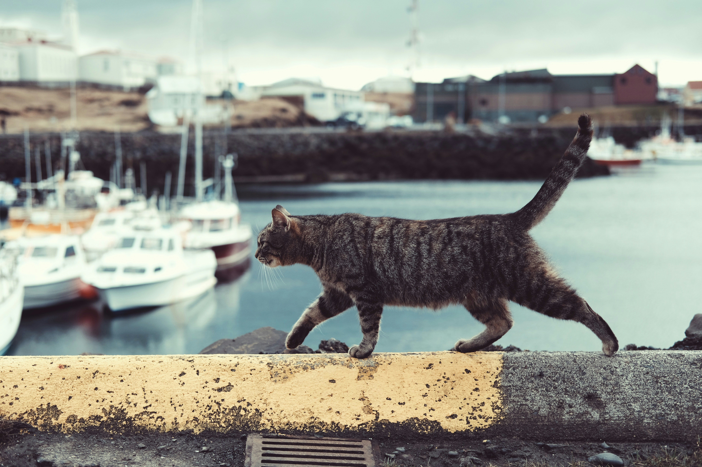

아기 오리는 한숨을 내쉬었다.
“천만다행이야. 내가 엄청나게 못생겨서 저 개도 굳이 나를 물려고 들지 않네.”
사냥이 끝난 뒤에도 아기 오리는 한참 동안 움직이지 못했다. 마침내 늪지를 빠져나온 그는 들판과 초원을 지나 바람을 맞으며 걸었다. 저녁 늦게 도착한 곳은 금방이라도 무너질 것 같은 허름한 가축우리였다. 문이 기울어진 틈으로 몸을 밀어 넣으니, 그 안에는 한 노파와 고양이, 암탉이 살고 있었다.
노파는 눈이 좋지 않아 아기 오리를 길 잃은 통통한 오리로 착각했다.
“잘 잡았네. 이제 오리 알이 생기겠어. 녀석이 수컷이 아니라면 말이야. 한번 지켜보자꾸나.”
그러나 아기 오리는 알을 낳을 수 없었다. 고양이와 암탉은 자신들이 세상에서 가장 현명하다고 믿었으며, 자신들이 이해하지 못하는 것은 쓸모없다고 여겼다. 암탉은 아기 오리에게 물었다.
“너 알 낳을 수 있어?”
“아니.”
“그럼 그 입 다물고 있는 게 좋아.”
